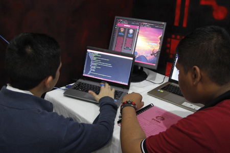
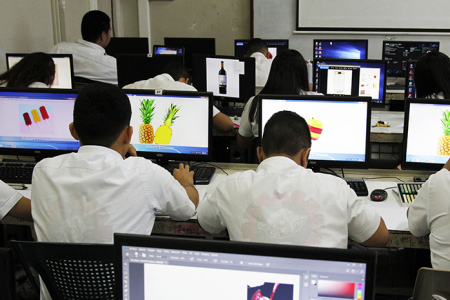

1.Bachillerato general. (2 AÑOS)
El diseño de bachillerato general es una modalidad de educacion formal.
Nuestro plan de estudios formal en nuestro jovens una cultura general basica,que comprende aspectos de la ciencias, humanidades y tecnologicas, para la cual se adquieren los elementos fudamentales para la construccion de nuevos aprndizajes; este diseño proporciona los comocimientos, metodos, tecnicas y lenguajes necesarios para ingresar a estudios superiores, desempeñandose de manera efiente.
Ventajas
*Plan de estudio fortalecido en matematicas, ciencias, fisica y ingles.
*Enseñaza de ciencias fisica, biologia y quimica como materiia individual.
*Desarrllo de programa complementario de valores.
*Oportunidad de participar en cursos libres y actividades extracuriculares.
2.Bachillerato general con Diplomado en Computacion (2 AÑOS)
*Formar bachilleres capaces de planera,diseñar,producir,operar y administrar los sistemas informaticos en ambiente web y local para el procesamiento de datos.
*Manipular tecnologias de informacion y de comunicacion para obtener optimos resultados.
*Instruir al estudiante en el aprovechamiento de la Tecnologia informatica como herramienta de apoyo a la gestion Empresariasl.
*Formar bachilleres con conocimientos en programacion,aptos para icorporarse a empresas desarrolladoras de software de asitencia y mantenimiento de sistemas.
Ventajas
*Contamos con ocho centros de computo.
*Equipo de ultima generacion.
*Personal altamente capacitado y especializado
*clases teorias practicas.
*Actualizacion de equipo y software constante.

3.Bachierato General con Diplomado en Diseño Grafico (2 AÑOS)
Formando bachilleres capaces de realizar proyectos de diseño grafico comerciales, claros y definidos, atraves de la organizacion e integracion de formas, textura y colores que se traduzcan en comunicacion significava y relevante para la sociedad
Ventajas
*personal docente especializado.
*Clases teoricas y practicas.
*La boratorios especializados para practicas.
*Actuakizacion de equipo y software de aplicacion (ADOBE CSS6).
